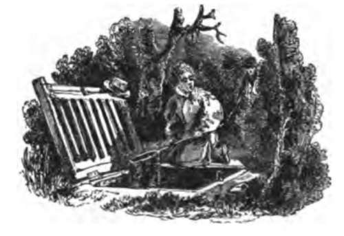
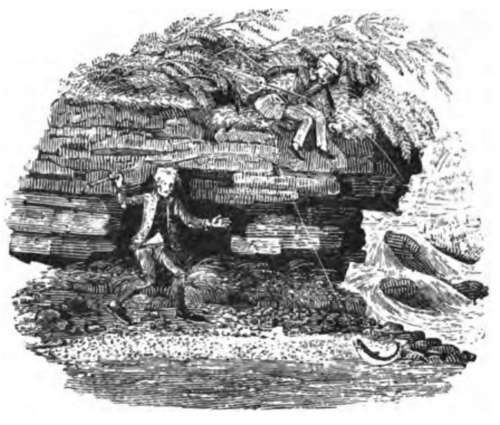

(3) Lease Of Fishing Rights
Description
This section is from the book "Fishing", by Horace G. Hutchinson. Also available from Amazon: Fishing.
(3) Lease Of Fishing Rights
This Indenture, made this day of , 19 , between A B , of (hereinafter called the lessor), of the one part, and C D , of [or E F , G H , etc., of , members of, and on behalf of, the Fishery Society], (hereinafter called the lessee), of the other part. Whereas the lessor is entitled to the exclusive right of fishing in that part of the river [or as may be], in the parish of , in the county of , as adjoins the lands of the lessor, in the occupation of , as tenant of the lessor [or in the occupation of the lessor as tenant for a term of years created by an indenture of lease, dated the day of ,19 , and expressed to be made between (parties), or as the case may be], and which lands are numbered respectively , on the Ordnance Survey map of the said parish, on the scale of 25 inches to a mile, and has agreed to demise all his said right of fishing to the lessee for the term at the rent, and subject to the covenants and conditions hereinafter contained. Now this Indenture witnessed that in pursuance of the said agreement, and in consideration of the rent hereby reserved, and the covenants and conditions herein contained, he, the lessor, does hereby let unto the lessee, his executors, administrators, and assigns, All that, the lessor's exclusive right of fishing in the river , in the parish of , in the county of , where it adjoins the lands of the lessor in the said parish, and which said lands are numbered respectively [fill in numbers] on the Ordnance Survey map of the said parish, drawn on the scale of 25 inches to the mile, and are now in the occupation of [fill in name], as tenant to the lessor: To hold the said fishery for the term of years from the day of next, yielding and paying in advance the annual rent of by equal half-yearly payments on the day of and the day of in each year, the first of such payments to be made on the day of next. And the lessee for himself, his heirs, executors, and administrators, covenants with the lessor, his heirs, and assigns [or his executors, administrators, and assigns as the case may be] that he will pay the rent hereby reserved on the days hereinbefore appointed for payment, and will pay and discharge all rates, taxes, and assessments whatever that shall during the continuance of these presents be levied or made upon the said fishery, landlord's property tax, land tax, and tithe rent charge (if any) only excepted : And will protect and preserve the said fishery from all illegal fishing, poaching, trespassing, and will proceed against and prosecute any person who may be found poaching, trespassing, or illegally fishing in the said fishery, and will not permit or suffer any person or persons to do any act or thing contrary to the right and title of the lessor to the said fishery, and will use his best endeavour to keep down all pike, coarse fish, and all other fish that may be likely to interfere with the proper development and maintenance of the fishery as a trout fishery, and will not allow any trout or grayling to be taken out of season or in an unclean state, or of a size less than inches [or under a certain length], and will not allow any trout or grayling to be taken otherwise than by rod and line [or by artificial fly], and will not take, or permit to be taken in any one day, more than trout and grayling, and will not take, or allow to be taken, from any fish caught in the said fishery any ova except for the purpose of artificial hatching for stocking the said fishery, and will not sell, part with, or in any way dispose of other than by turning the same into the said fishery any fry, yearlings, or other fish that may have been bred in any hatchery or other place for the artificial propagation of fish connected with the said fishery: And will not turn down, or permit to be turned down, or put into the said fishery, any fish, whether British or imported from abroad, except the different species of the genus salmon, without the previous written consent of the lessor or his authorised agent: And will in each year turn into the said fishery not less than healthy yearling trout, either produced or bred in the hatcheries connected with the fishery, or bred elsewhere in the United Kingdom, and produce to the lessor or his agent satisfactory evidence of the place of purchase, number and condition of the trout so turned down, and in default will pay to the lessor such sum not exceeding £ by way of additional rent as will enable the lessor to obtain in the next season a number of healthy yearling trout sufficient to make up the annual number: And will at least times a year net out and destroy all pike and coarse fish there may be in the said fishery, and will every year furnish to the lessor a return of all the pike and coarse fish netted out and killed. Provided always, and these presents are upon the express condition, that if the rent hereby reserved shall be in arrears for twenty-one days after the days herein fixed for payment, whether the same shall have been legally demanded or not, or if the lessee shall commit any breach of any of the covenants, agreements, and conditions on his part to be performed herein contained, that then the lessor may at any time thereafter re-enter upon the same premises, and the term hereby created shall thereupon cease and determine, but without prejudice to the right of the lessor to recover all rent due and damages for any covenant and condition which the lessee has broken. And the lessor does hereby, for himself, his heirs, executors, and administrators covenant with the lessee, his executors, and administrators that he will at all times during the continuance of the term hereby created, use his best endeavour that the supply of water to the said fishery should be maintained both in quantity and quality in as good a condition as it was at the date of these presents, and will prevent by all reasonable means any pollution of the water of the said fishery so as to be prejudicial thereto, and will not do anything by himself or his agents, or permit anything to be done which will interfere with the free passage of trout or grayling to or from the said fishery, or that will change or alter the nature and condition of the river or its bed at the said fishery, £nd will at the written request of the lessee cut down and remove such bushes, trees, and shrubs growing on the banks of the said river adjoining the said fishery as may be prejudicial thereto, and will plant such trees, shrubs, and bushes as may be reasonably required for shelter or otherwise for the benefit of the said fishery, and will not by himself or servants take, or agree to take, nor permit his tenants or workmen, to take gravel, sand, or material from the bed of the river in the said fishery which shall damage or injure the same, nor suffer any fencing, planting, or other work to be done that will interfere with the free access of the lessee, his servants and agents, to the fishery: And that the lessee, paying the rent and performing the covenants herein contained, shall quietly possess and enjoy the said fishery during the continuance of these presents: And will at all time during the continuance of these presents, on the request in writing of the tenant authorise such persons as the tenant may nominate to exercise all rights of seizure of tackle or nets given to the lessor by the Larceny Law Consolidation Act, 1866, or any other statutes: Provided always, and it is hereby agreed between the parties hereto, that if either of them is desirous of determining the term hereby created after the day of , that on the party so desirous giving to the other calendar months' notice in writing before the day of in any year of his intention to determine the same that then, on the expiration of such notice, the term hereby created shall, as on the day of next after the receipt of such notice, cease and determine: Provided also that if the lessee is desirous of assigning or parting with the possession of the term hereby created to a satisfactory, qualified, responsible person, of which the lessor shall be sole judge, the lessee shall be at liberty to assign the residue of the said term to such person if the assent in writing of the lessor or his agent has been previously obtained. In witness, etc.
This lease must be under seal. In most cases it will be found too stringent, but it was considered as well to insert all the clauses required, as they can readily be omitted. If the lease is of a coarse fish fishery, considerable modification will be wanted.
The idea has been to try and provide (1) all proper restrictions on the lessee's fishing, (2) provisions for keeping up the stock of fish, (3) provisions for preventing the fishery being turned into a fish farm, and from having objectionable fish introduced; while to protect the tenant the landlord has been made to covenant as to the water supply both for quantity and quality, to keep the river as near as possible in the same state, and not to allow his tenants to injure the fishery. Here again it will require modification in each case, but the important special points from a fishing point of view are, it is believed, inserted. All the precautions as to the rights of the lessor to grant it, mentioned above under agreement No. 1, are equally requisite and important here. Careful inquiry should be made from the tenants of the land, not only as to what rights they have been in the habit of exercising, but also as to what rights they claim to exercise.

Continue to: